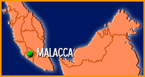
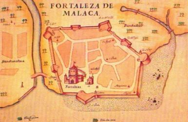
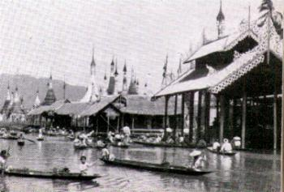
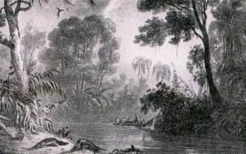
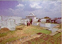
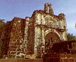
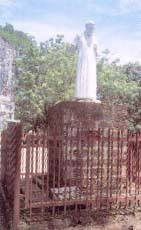
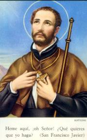
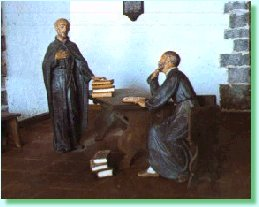

Desembarcou
em Setembro de 1545. Era um porto muito importante que unia a
Índia ao
Extremo Oriente. Estava abarrotado de navios de todas as partes. No centro da
cidade fazia um calor intenso e ao redor, existia uma selva tropical com grande
vegetação. Os habitantes locais estavam por demais corrompidos, só pensavam
em ganhar dinheiro e gozar os prazeres da vida. Xavier não estava com vontade de
se deter ali, mas o capitão da Fortaleza lhe pediu que esperasse o retorno de uma
expedição que havia mandado as Ilhas Moluscas. Por essa razão, esperou durante
três meses e meio. Durante este tempo, vivia no Hospital cuidando dos enfermos,
celebrando Missas, pregando e ensinando a doutrina cristã, também batizava e ouvia
confissão de todos que o procurava. A noite, como era seu hábito, andava pelas ruas
tocando 
uma sineta, em companhia dos jovens que trouxe de Goa convidando
o povo a rezar pelas almas que estão no purgatório e a crerem em DEUS e em JESUS
CRISTO. Também, convidava o povo a participar do Catecismo. Nesta noite em Málaca,
ao passar diante de uma cabana onde as pessoas suplicavam a sua presença, viu que
seguravam um jovem com terríveis convulsões de loucura. O Santo aproximou-se, fez
o exorcismo e o demônio abandonou o jovem, que ficou tranqüilo e dormiu. Ao longo
do tempo em que permaneceu na cidade, o SENHOR fez muitos milagres por
intercessão de Padre Xavier. Por outro lado, com a influência dos missionários
a cidade cresceu tanto que em 1558 foi criado o Bispado de Málaca para
o Extremo Oriente.
ILHAS MOLUSCAS
Em Janeiro de
1546 viajou pelas Ilhas Moluscas, dando assistência espiritual
aos
moradores da região. Certo dia enfrentou uma grande tormenta. Para acalma-la
colocou o seu crucifixo no mar atado a um barbante grosso. O barbante se rompeu,
o crucifixo desapareceu, mas o mar ficou tranqüilo. Dias após, quando o Santo
caminhava na praia de uma das ilhas do arquipélago das Moluscas, viu com grande
alegria um caranguejo dos grandes vir em sua direção com o crucifixo preso numa de
suas puãs. Chegaram em Amboíne, capital das Moluscas. Xavier e seus companheiros
desembarcaram e o navio vagarosamente seguiu a sua rota, com dezenas e dezenas
de paradas. Amboíne tinha uma magnífica Bahia e a água do porto era claríssima.
No fundo tinha corais, plantas marinhas e 
esponjas. Grandes medusas
transparentes e peixes coloridos circulavam por toda aquela área. Todavia os
habitantes das Ilhas eram antropófagos. As pessoas que morriam eles comiam as
mãos e os calcanhares. Para fazer um banquete, procuravam por um defunto, se não
tivesse, matavam os velhos. Comiam também os cadáveres dos inimigos. O povo
estava completamente corrompido. Não havia missionários na região e com medo
dos muçulmanos, os nativos viviam unidos nos altos das montanhas, como selvagens.
O Santo depois de construir uma cabana para Capela, com o simpático Manuel (que
mais tarde morreu mártir) entrou pela mata em busca dos selvagens. E como não
encontrava ninguém, começou a cantar. Ao ouvi-lo, os moluscos saíram vagarosamente
de seus
esconderijos e foram aos poucos adquirindo confiança e se aproximaram.
Xavier começou a sua catequese, ele e os jovens que o auxiliava ensinaram ao povo
exaustivamente a verdadeira religião e domesticaram aquela gente. As sete aldeias
das ilhas foram visitadas dezenas de vezes e transformadas em aldeias cristãs. Com
o tempo, os habitantes convertidos passaram a freqüentar a Capela, a participar da
Santa Missa, a Confessar e Comungar o Corpo e Sangue do SENHOR. Na continuidade,
os comerciantes e marinheiros na sua maioria de origem portuguesa, que tinham se
estabelecido nas ilhas, também se aproximaram e adquiriram o hábito de rezar
e frequentar as celebrações na Capela. A comunidade progrediu e
ficou civilizada.
RETORNOU A MÁLACA
Uma noite
no ano de 1547 em Málaca, o porto foi atacado por uma poderosa
frota
de 5 mil piratas. Mas a guarnição portuguesa estava vigilante e reagiu firme com
seus poderosos canhões e depois, perseguiu os piratas até extermina-los totalmente.
Passaram-se 15 dias e a frota portuguesa não tinha regressado. A maior parte do
povo começou a considerar que a frota estava perdida. Durante a celebração de
uma Santa Missa, Xavier fazia uma pregação. De súbito ele parou e disse:
“Rezai em ação de graças pela vitória que acaba
de alcançar a nossa frota.” Mais tarde chegou ao porto a
vencedora frota portuguesa.
Com
sua amabilidade e atenção, ganhou o respeito e a amizade das pessoas. Ele
mesmo escreveu a um de seus companheiros: “Faça-se amar porque só assim conseguirá influir as pessoas. Se você
usa a amabilidade e o bom trato no lidar cotidiano, verá que conseguirá efeitos
admiráveis”. Estabeleceu classes de 
Catecismo para Crianças e Adultos. Incentivou a freqüência das pessoas a
Confissão Sacramental e a Sagrada Comunhão. Procurava ensinar a religião
de modo direto e alegre, sobretudo por meio de belas músicas que os fieis
repetiam com muito prazer.
Por
dezenas de vezes seguidas fez longas viagens ensinando a religião cristã
a povos pagãos que nunca tinham ouvido falar em JESUS. E a reação do
povo sempre era a mesma, as pessoas consideradas da Classe Alta não lhe
faziam caso e nem se interessavam pelas pregações do Santo. Mas a Classe
Popular se convertia em quantidade. Em cada região deixava catequistas para
continuar instruindo as pessoas e de vez em quando, enviava-lhes um jesuíta
para incrementar o fervor da fé e aprimorar os conhecimentos cristãos.
Francisco
procurou o mais possível, assimilar os seus hábitos pessoais aos costumes
e bons hábitos do povo que lhe escutava. Comia como eles somente arroz e ao
invés de bebidas finas, só bebia água. Dormia no chão de uma pobre cabana.
Conquistava a simpatia das crianças e lhes contava belas histórias da Sagrada
Escritura, recomendando-lhes que também as descrevessem em casa para
seus pais e irmãos.
VOLTOU A GOA
Tendo regressado
a Goa em 1548, um mercador português veio visitar-lhe e
trazia com ele um homem
pequeno, de pele amarela e olhos oblíquos, chamado Angero. O fato aconteceu assim: um
furacão levou um navio português até as costas do Japão; Angero que havia matado um
homem, tratou de fazer amizade com o pessoal do navio para fugir de lá. O japonês
estava muito arrependido e sentia remorso por ter cometido o crime. Por essa
razão o aconselharam procurar um Padre, para conseguir o perdão de DEUS.
Xavier recebeu-o com amizade. Na continuidade, Angero passou a freqüentar o
catecismo e logo começou a escrever, porque também conhecia um pouco de português.
Um dia o Santo lhe perguntou: “Se ele fizesse
a pregação do Evangelho aos japoneses, eles se converteriam ao cristianismo?”
Não. Respondeu Angero e
completou: “Primeiro eles iam querer saber
minuciosamente o que era ser cristão. Depois, se observassem que o missionário
praticava o que pregava, se converteriam. Isto porque os japoneses são muito
razoáveis.”
Angero sabia
mais do que o suficiente para ser batizado, por isso, propositalmente Xavier quis
que o batizado fosse feito pelo Bispo de Goa. E assim foi feito, depois de
batizado Angero recebeu o novo nome:
“Paulo de Santa Fé”.
Passados
alguns dias, chegou uma carta do Japão para Xavier, informando que um rei
queria ser cristão. Isto fez aumentar ainda mais o desejo dele, de viajar para lá.
Entretanto, muitos o desanimava dizendo que a viagem era muito longa, que o
mar estava cheio de piratas, que os portugueses não tinham nenhuma guarnição
para defende-lo. Mas o Santo resolveu todos os assuntos pendentes relacionados

com a Índia, se despediu abraçando os seus irmãos e com a benção
do Bispo de Goa, embarcou para o Japão em companhia de Angero (Paulo de
Santa Fé).
Era um barco
pequeno de um chinês apelidado “o ladrão
dos piratas”. Na popa do navio havia um ídolo horroroso,
rodeado de luzes e incenso. No convés do navio tiraram a sorte, era o modo de
consultar o ídolo e saber, se depois desta viagem ao Japão voltariam a Málaca.
A “sorte” disse que
não. Então o pessoal do barco disse: “Não
iremos ao Japão”. Xavier afastou-se e fez uma oração.
Permaneceu em silêncio. Formou-se uma grande tempestade e o barco dirigiu-se
para um porto da China. Ao cruzar com outro barco, os tripulantes da outra embarcação
lhes avisaram que aquela área estava infestada de piratas. Rapidamente fizeram uma
curva e tomaram novamente a direção de Goa. Mas de repente, um vento muito forte
os arrastou até o Japão. Depois escreveu Francisco Xavier sobre a sua ida ao Japão:
“Ni el demônio ni sus ministros pudieron
impedir nuestra venida.” (Nem o demónio e nem os seus
ministros puderam impedir a nossa chegada ao Japão).

Próxima
Página 
 Página Anterior
Página Anterior
Retorna ao Índice